FERRAMENTAS Pular para seção: Martelo(Hammer), Machado(Axe), Enxada(Hoe), Regador(Watering Can), Foice(Sickle), Vara de Pescar(Fishing Rod e Fishing Pole), Escova(Brush) ,Sino(Bell), Ordenhador(Milker), Tosquiadores(Clippers), Máquinas Produtoras(Maker Machines), Máquina de Maionese(Mayonnaise Maker), Máquina de Queijo(Cheese Maker), Máquina de Novelo(Yarn Maker). Você começa Harvest Moon: Back to Nature com muitas ferramentas e o resto você tem que comprar de várias lojas. Suas cinco principais ferramentas também podem subir de nível e se tornar mais eficiente. Para subir de nível as suas ferramentas você tem que usar repetidamente e seu nível de força devagarmente aumentará. Você pode ver o quanto de nível suas ferramentas subiu no menu "START". Você verá uma porcentagem e a cada 100% ela está pronta para um upgrade. Então por exemplo se você usa seu martelo bastante e tem seu nível até 100% então quer dizer que subiu um nível e agora você pode dar um upgrade nela. Neste jogo há cinco níveis para cada uma destas principais ferramentas, normal, cobre, prata, ouro e mystrile. Se você tiver com sua ferramenta no nível 100% você pode então dar sua ferramenta ao Ferreiro(Blacksmith) juntamente com um minério de cobre e algum dinheiro e ele dará um upgrade para uma ferramenta de cobre. Para atualizar a ferramenta você precisará do nível de força no nível certp e o correspondente minério mais um taxa e três dias para o ferreiro fazer a nova ferramenta. Você pode achar o minério na mina. Você pode pular níveis neste jogo também. Você pode atualizar o nível de força da ferramenta para 400% e então dar juntamente com um minério de mystrile para o ferreiro e ter a versão de mystrile daquela ferramenta contornando as outras três atualizações. Isto é o que eu frequentemente faço para economizar dinheiro. E lembre-se: neste jogo a porcentagem é a quantidade acima do nível atual da sua ferramenta. Se você tem uma ferramenta de cobre com 200% quer dizer que você pode atualizar ela para a versão de ouro. Você verá no menu de pause um pequeno icone para vários upgrades que estão disponíveis a qualquer hora para a ferramenta também. As ferramentas ganham quase 4 vezes mais experiencia se voce usa elas para uso pretendido. Por exemplo, se você usa um machado para cortar um toco de árvore ela ganhará 4 vezes a experiência do que ganharia se você apenas batesse no chão. Ela ainda ganhará experiência se você ficar batendo no chão, será apenas uma pequena perda de experiência do que fazer com o toco. Ferramenta Minério Necessário Custo para Atualizar Ferramenta de Cobre(Copper Tool) Cobre(Copper) 1.000G Ferramenta de Prata(Silver Tool) Prata(Silver) 2.000G Ferramenta de Ouro(Gold Tool) Ouro(Gold) 3.000G Ferramenta de Mystrile(Mystrile Tool) Mystrile 5.000G 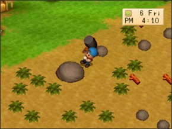 MARTELO(HAMMER) Martelo Normal: Pode apenas quebrar pequenas rochas Martelo de Cobre: Pode quebrar rochas grandes em 4 golpes completamente carregado Martelo de Prata: Pode quebrar rochas grandes em 2.5 golpes completamente carregado e rochas deformadas em 4.5 golpes completamente carregados Martelo de Ouro: Pode quebrar rochas grandes em 1 golpe completamente carregado e rochas deformadas em 2.5 golpes completamente carregado Martelo de Mystrile: Pode quebrar rochas grandes e rochas deformadas com 1 golpe completamente carregado 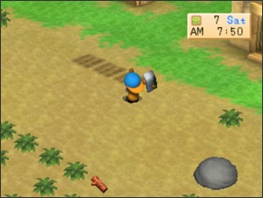 ENXADA(HOE) Enxada Normal: Ara um quadrado bem na sua frente Enxada de Cobre: Ara dois quadrados em uma linha na sua frente completamente carregado Enxada de Prata: Ara três quadrados em uma linha na sua frente completamente carregado Enxada de Ouro: Ara quatro quadrados em uma linha na sua frente completamente carregado Enxada de Mystrile: Ara seis quadrados em uma linha na sua frente completamente carregado OBS: Mesmo se você atualizar sua enxada e carrega-la, na mina você ainda só pode arar um quadrado de cada vez. 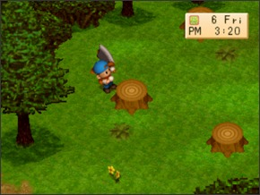 MACHADO(AXE) Machado Normal: Pode somente cortar galhos Machado de Cobre: Pode cortar um toco de uma árvore em 6 golpes completamente carregado Machado de Prata: Pode cortar um toco de uma árvore em 3 golpes completamente carregado Machado de Ouro: Pode cortar um toco de uma árvore em 2 golpes completamente carregado Machado de Mystrile: Pode cortar um toco de uma árvore em 1 golpe completamente carregado 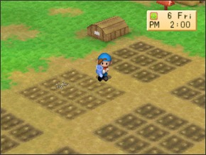 REGADOR(WATERING CAN) Regador Normal: Rega apenas um quadrado bem na sua frente Regador de Cobre: Rega um área de 1x3 de terra na sua frente com uso completamente carregado Regador de Prata: Rega uma área 2x3 de terra na sua frente com uso completamente carregado Regador de Ouro: Rega uma área 3x3 de terra na sua frente com uso completamente carregado Regador de Mystrile: Rega uma área de 5x3 de terra na sua frente com uso completamente carregado Cada um desses regadores pode guardar 100 unidades de água no máximo e você pode só perder água regando um quadrado arado. Você pode regar a terra ou qualquer outra coisa quantas você quiser e você não perderá nenhuma gota d'água. 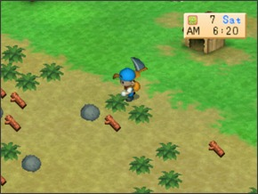 FOICE(SICKLE) Foice Normal: Corta apenas um quadrado de grama, ervas ou plantas na sua frente Foice de Cobre: Corta uma área de um 1x3 quadrados na sua frente completamente carregado Foice de Prata: Corta uma área de 2x3 quadrados ao seu redor com ela completamente carregado Foice de Ouro: Corta uma área de 3x3 quadrados ao seu redor com ela completamente carregado Foice de Mystrile: Corta uma área de 5x5 quadrados ao seu redor com ela completamente carregado Além das cinco ferramentas iniciais você também pode comprar ou adquirir cinco ferramentas adcionais em Harvest Moon: Back to Nature. 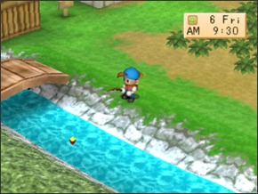 VARA DE PESCAR VELHA E VARA DE PESCAR NOVA(FISHING ROD & FISHING POLE) Para pegar a Vara de Pesca velha neste jogo fale com Greg no fim do pier das 7:00am as 10:00am ou 7:00pm as 10:00pm nas Sextas-Feiras, Sábados e Domingos e Greg Dará a você uma Vara de Pescar Velha. Para pegar a Vara de Pescar Nova no qual é um versão atualizada da Vara de Pescar Velha você tem que ter pelo menos 50 peixes em sua lagoa. Assim Greg virá para sua fazenda, complementa você pela sua lagoa de peixe e vai te dar uma Vara de Pesca Melhor(Fishing Pole) É muito importante que você tenha uma espaço na sua mochila para a Vara de Pescar Melhorada(Fishing Pole) e que você não entre em nenhuma casa/construção ou saia da fazenda antes de falar com Greg ou você nunca será capaz de adquirir a Vara de Pesca Melhorada(Fishing Pole). Saiba mais sobre pescaria aqui. 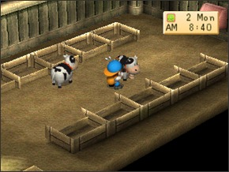 ESCOVA(BRUSH) Você pode comprar a escova na loja de Saibara(Blacksmith's Shop) por 800G. O único proposito real da escova é escova seu cavalo no qual dará a ele mais +2 de afeto. Você pode escovar suas vacas e ovelhas e elas podem parecer gostar mas não tem efeito em níveis de afeto. 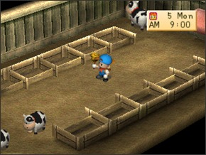 SINO(BELL) Você pode comprar o sino no Rancho Yodel(Yodel Ranch) por 500G. O sino chamará suas vacas e ovelhas em direção a você no qual é útil para junta-las. Quando eu joguei este jogo eu sempre deixo elas no celeiro por que assim é mais fácil. 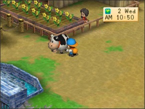 ORDENHADOR(MILKER) Você pode comprar o ordenhador na loja de Saibara(Blacksmith's Shop) por 2.000G. O ordenhador deixa você tirar leite de suas vacas. Não tem nenhum efeito em seus níveis de afeto. 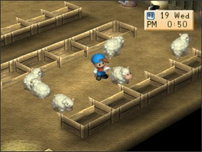 TOSQUIADORES(CLIPPERS) Você pode comprar o tosquiador na loja de Saibara por 1.800G. Os tosquiadores permite que você corte lã de sua ovelha. Usando tosquiadores não tem efeito em níveis de afeilçao da sua ovelha. MÁQUINAS PRODUTORAS Além das ferramentas existem também três "Máquinas Produtoras(Maker Machines)" em Harvest Moon: Back to Nature que transformam ovos, leite e lã em maionese, queijo e novelo no qual todos vendem por um preço muito alto. Saibara fará estas máquinas pra você se você tiver cumpridas duas das condições neste jogo. 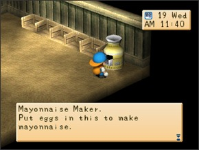 MÁQUINA DE MAIONESE(MAYONNAISE MAKER) Jogue ovos dentro da máquina de maionese para virarem maionese. Você terá a melhor maionese dependendo do nível de afeto de suas galinhas. Você tem que ter aumentado seu galinheiro antes de você poder comprar a máquina de maionese. A máquina de maionese custa 20.000G mais um minério de adamantite e levará cinco dias para ser construido. 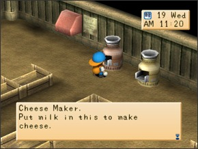 MÁQUINA DE QUEIJO(CHEESE MAKER) Jogue leite dentro da máquina de queijo para virarem queijo. O melhor leite que você colocar, o melhor queijo você vai ter. Você tem que aumentar seu celeiro antes de comprar a máquina de queijo. A máquina de queijo custa 20.000G mais um minério de admantite e levará 5 cinco dias para ser construida. 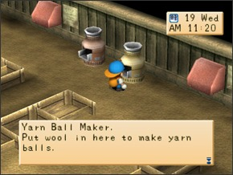 MÁQUINA DE NOVELO(YARN MAKER) Jogue lã dentro da máquina de novelo para virarem novelo. A maior qualidade de lã que você usa o melhor novelo você terá. Você tem que ter aumentado seu celeiro antes de poder comprar a máquina de novelo. A máquina de novelo custa 20.000G mais um minério de admantite e levará 5 dias para ser construida. Olá! Bem-Vindo!